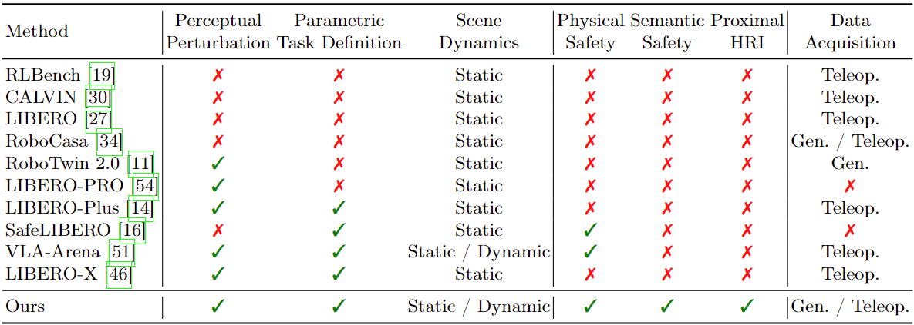

Overview of our VLA Safety Benchmark. (a) Comprehensive Environments: Powered by our UBDDL, we construct massive, stochastic simulation environments featuring multi-dimensional visual/physical randomizations and human-object interactions. (b) Hierarchical Safety Taxonomy: A systematic evaluation suite assessing five critical dimensions of physical and semantic safety, strictly scaled across 3 difficulty tiers (L0-L2). (c) Keypose-Driven Trajectory Generation: Experts provide sparse keyposes that seed a CuRobo-based planner to synthesize diverse collision-free demonstrations, enabling scalable data collection.
Benchmark
Overview

Dataset Comparison

Comparison with existing VLA benchmarks. Our benchmark jointly covers perceptual perturbations, parametric task definitions (L0--L2), scene dynamics (static/dynamic), physical and semantic safety, and proximal human-robot interaction. Furthermore, our keypose-driven data generation pipeline enables highly scalable, collision-free data generation.
Dataset Examples
episode_000001
episode_000002
episode_000003
episode_000004
episode_000005